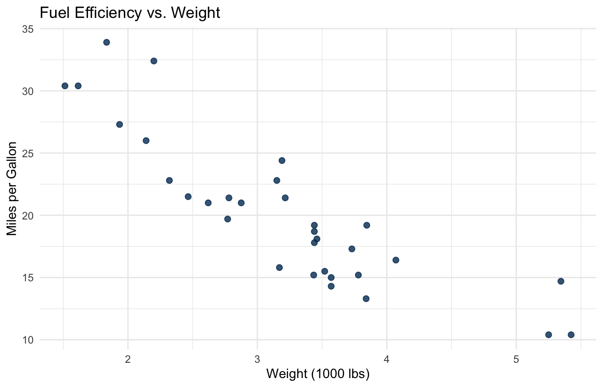
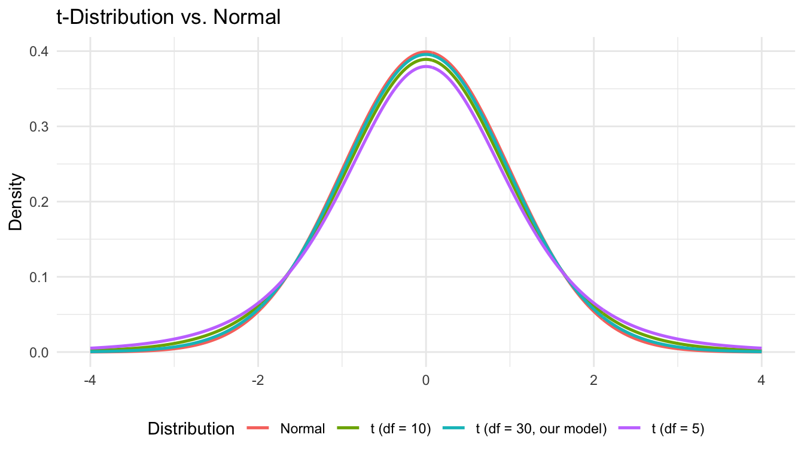

library(tidyverse)
library(knitr)Lab 3: Inference in Simple Linear Regression
Normality Assumption, MLE, Confidence Intervals, and Hypothesis Tests
Objectives
In this lab you will:
- Compare the MLE and OLS estimates of \(\sigma^2\) and explain why MLE is biased
- Visualize the \(t\)-distribution and use
qt()to find critical values - Construct confidence intervals for \(\beta_0\) and \(\beta_1\) manually and with
confint() - Conduct two-sided and one-sided hypothesis tests for regression coefficients
- Extract and interpret \(t\)-statistics and p-values from
summary()output
Setup
1. The Data: Motor Trend Car Road Tests
We will use the mtcars dataset, which records fuel consumption and design characteristics for 32 automobiles.
Research question: Does a car’s weight (in 1000 lbs) predict its fuel efficiency (mpg)?
glimpse(mtcars)Rows: 32
Columns: 11
$ mpg <dbl> 21.0, 21.0, 22.8, 21.4, 18.7, 18.1, 14.3, 24.4, 22.8, 19.2, 17.8,…
$ cyl <dbl> 6, 6, 4, 6, 8, 6, 8, 4, 4, 6, 6, 8, 8, 8, 8, 8, 8, 4, 4, 4, 4, 8,…
$ disp <dbl> 160.0, 160.0, 108.0, 258.0, 360.0, 225.0, 360.0, 146.7, 140.8, 16…
$ hp <dbl> 110, 110, 93, 110, 175, 105, 245, 62, 95, 123, 123, 180, 180, 180…
$ drat <dbl> 3.90, 3.90, 3.85, 3.08, 3.15, 2.76, 3.21, 3.69, 3.92, 3.92, 3.92,…
$ wt <dbl> 2.620, 2.875, 2.320, 3.215, 3.440, 3.460, 3.570, 3.190, 3.150, 3.…
$ qsec <dbl> 16.46, 17.02, 18.61, 19.44, 17.02, 20.22, 15.84, 20.00, 22.90, 18…
$ vs <dbl> 0, 0, 1, 1, 0, 1, 0, 1, 1, 1, 1, 0, 0, 0, 0, 0, 0, 1, 1, 1, 1, 0,…
$ am <dbl> 1, 1, 1, 0, 0, 0, 0, 0, 0, 0, 0, 0, 0, 0, 0, 0, 0, 1, 1, 1, 0, 0,…
$ gear <dbl> 4, 4, 4, 3, 3, 3, 3, 4, 4, 4, 4, 3, 3, 3, 3, 3, 3, 4, 4, 4, 3, 3,…
$ carb <dbl> 4, 4, 1, 1, 2, 1, 4, 2, 2, 4, 4, 3, 3, 3, 4, 4, 4, 1, 2, 1, 1, 2,…ggplot(mtcars, aes(x = wt, y = mpg)) +
geom_point(color = "#003660", alpha = 0.8, size = 2) +
labs(
title = "Fuel Efficiency vs. Weight",
x = "Weight (1000 lbs)",
y = "Miles per Gallon"
) +
theme_minimal()
Question 1. Describe the relationship between weight and mpg in 2–3 sentences. Comment on direction, strength, and whether a linear model seems appropriate.
Answer:
2. Fitting the Model and Extracting Key Quantities
fit <- lm(mpg ~ wt, data = mtcars)
summary(fit)
Call:
lm(formula = mpg ~ wt, data = mtcars)
Residuals:
Min 1Q Median 3Q Max
-4.5432 -2.3647 -0.1252 1.4096 6.8727
Coefficients:
Estimate Std. Error t value Pr(>|t|)
(Intercept) 37.2851 1.8776 19.858 < 2e-16 ***
wt -5.3445 0.5591 -9.559 1.29e-10 ***
---
Signif. codes: 0 '***' 0.001 '**' 0.01 '*' 0.05 '.' 0.1 ' ' 1
Residual standard error: 3.046 on 30 degrees of freedom
Multiple R-squared: 0.7528, Adjusted R-squared: 0.7446
F-statistic: 91.38 on 1 and 30 DF, p-value: 1.294e-10We will use these quantities throughout the lab.
n <- nrow(mtcars)
b0 <- coef(fit)["(Intercept)"]
b1 <- coef(fit)["wt"]
x <- mtcars$wt
x_bar <- mean(x)
RSS <- sum(residuals(fit)^2)
Sxx <- sum((x - x_bar)^2)
MSE <- RSS / (n - 2)3. MLE vs. OLS Estimate of \(\sigma^2\) (Lec 05)
From Lecture 5, the two estimates of the error variance are:
\[\widehat{\sigma}^2_{\text{OLS}} = \frac{\text{RSS}}{n - 2} = \text{MSE} \qquad \text{(unbiased)}\]
\[\widehat{\sigma}^2_{\text{MLE}} = \frac{\text{RSS}}{n} \qquad \text{(biased — MLE does not correct for the two estimated parameters)}\]
sigma2_OLS <- RSS / (n - 2)
sigma2_MLE <- RSS / n
data.frame(
Estimator = c("OLS (unbiased)", "MLE (biased)"),
Formula = c("RSS / (n - 2)", "RSS / n"),
Value = round(c(sigma2_OLS, sigma2_MLE), 3)
) |>
kable(align = "llr", caption = "Comparing OLS and MLE estimates of σ²")| Estimator | Formula | Value |
|---|---|---|
| OLS (unbiased) | RSS / (n - 2) | 9.277 |
| MLE (biased) | RSS / n | 8.698 |
Question 2.
(a) Which estimate is larger — OLS or MLE? Does this match the direction of bias you would expect from a downward-biased estimator?
(b) The ratio MLE / OLS equals \((n - 2)/n\). Using \(n = 32\), compute this ratio. As \(n\) grows very large, what happens to the gap between the two estimates?
Answer:
4. The \(t\)-Distribution and Critical Values (Lec 05/06)
From Lecture 5, if \(Z \sim N(0,1)\) and \(V \sim \chi^2_k\) independently, then
\[T = \frac{Z}{\sqrt{V / k}} \sim t_k\]
In regression, replacing the unknown \(\sigma^2\) with MSE produces exactly this structure:
\[\frac{\widehat{\beta}_1 - \beta_1}{(\text{MSE}/S_{xx})^{1/2}} \sim t_{n-2}\]
4.1 Visualizing the \(t\)-Distribution
x_vals <- seq(-4, 4, length.out = 500)
df_dist <- data.frame(
x = rep(x_vals, 4),
y = c(dnorm(x_vals),
dt(x_vals, df = 5),
dt(x_vals, df = 10),
dt(x_vals, df = n - 2)),
dist = rep(c("Normal", "t (df = 5)", "t (df = 10)",
paste0("t (df = ", n - 2, ", our model)")),
each = 500)
)
ggplot(df_dist, aes(x = x, y = y, color = dist)) +
geom_line(linewidth = 0.9) +
labs(title = "t-Distribution vs. Normal",
x = NULL, y = "Density", color = "Distribution") +
theme_minimal() +
theme(legend.position = "bottom")
Question 3. Compare the \(t\)-distribution with df = 5 to the standard normal. What happens to the tails, and why? How does the shape change as degrees of freedom increase toward infinity?
Answer:
4.2 Finding Critical Values with qt()
# 95% CI critical value (alpha = 0.05, two-sided -> upper tail = 0.025)
t_crit_95 <- qt(0.975, df = n - 2)
t_crit_95[1] 2.042272# 99% CI critical value
t_crit_99 <- qt(0.995, df = n - 2)
t_crit_99[1] 2.749996# One-sided critical value (alpha = 0.05, upper tail = 0.05)
t_crit_one <- qt(0.95, df = n - 2)
t_crit_one[1] 1.697261Question 4. We use
qt(0.975, ...)to get the critical value for a 95% confidence interval. Why 0.975 rather than 0.95?Answer:
5. Confidence Intervals for \(\beta_1\) and \(\beta_0\) (Lec 06)
From Lecture 6, the \(100(1-\alpha)\%\) confidence intervals are:
\[\widehat{\beta}_1 \pm t_{1-\alpha/2,\, n-2} \cdot \text{SE}(\widehat{\beta}_1), \qquad \text{SE}(\widehat{\beta}_1) = \left(\frac{\text{MSE}}{S_{xx}}\right)^{1/2}\]
\[\widehat{\beta}_0 \pm t_{1-\alpha/2,\, n-2} \cdot \text{SE}(\widehat{\beta}_0), \qquad \text{SE}(\widehat{\beta}_0) = \left[\text{MSE}\!\left(\frac{1}{n} + \frac{\bar{x}^2}{S_{xx}}\right)\right]^{1/2}\]
5.1 Manual Calculation
se_b1 <- sqrt(MSE / Sxx)
se_b0 <- sqrt(MSE * (1/n + x_bar^2 / Sxx))
cat("SE(β̂₁):", round(se_b1, 4), "\n")SE(β̂₁): 0.5591 cat("SE(β̂₀):", round(se_b0, 4), "\n")SE(β̂₀): 1.8776 Use the SEs above to build 95% confidence intervals:
CI_b1_95 <- c(b1 - t_crit_95 * se_b1, b1 + t_crit_95 * se_b1)
CI_b0_95 <- c(b0 - t_crit_95 * se_b0, b0 + t_crit_95 * se_b0)
cat("95% CI for β₁: (", round(CI_b1_95[1], 3), ",", round(CI_b1_95[2], 3), ")\n")95% CI for β₁: ( -6.486 , -4.203 )cat("95% CI for β₀: (", round(CI_b0_95[1], 3), ",", round(CI_b0_95[2], 3), ")\n")95% CI for β₀: ( 33.45 , 41.12 )5.2 Verification with confint()
confint(fit, level = 0.95) 2.5 % 97.5 %
(Intercept) 33.450500 41.119753
wt -6.486308 -4.202635Do your manual results match?
Question 5. Interpret the 95% CI for \(\beta_1\) in context. Does the interval contain 0? What does that tell you about the relationship between weight and fuel efficiency?
Answer:
Question 6. The 95% CI for \(\beta_0\) is approximately \((33.4, 41.1)\). A car with weight = 0 is physically impossible. What does this tell us about when the intercept has a meaningful real-world interpretation?
Answer:
Now compute a 90% confidence interval for \(\beta_1\):
# TODO: replace NULL with qt(...)
t_crit_90 <- NULL
# TODO: replace NULL with c(b1 - ..., b1 + ...)
CI_b1_90 <- NULLcat("90% CI for β₁: (", round(CI_b1_90[1], 3), ",", round(CI_b1_90[2], 3), ")\n")Error in `round()`:
! non-numeric argument to mathematical functionQuestion 7. Compare the 90% and 95% CIs for \(\beta_1\). Which is wider? What is the trade-off between a higher confidence level and the width of the interval?
Answer:
6. Hypothesis Testing (Lec 06)
6.1 Two-Sided Test: \(H_0: \beta_1 = 0\)
The test statistic from Lecture 6 is:
\[t^* = \frac{\widehat{\beta}_1 - 0}{\text{SE}(\widehat{\beta}_1)} \sim t_{n-2} \quad \text{under } H_0\]
t_star_b1 <- b1 / se_b1
t_star_b1 wt
-9.559044 # Two-sided p-value
p_val_b1 <- 2 * pt(abs(t_star_b1), df = n - 2, lower.tail = FALSE)
p_val_b1 wt
1.293959e-10 Question 8. At \(\alpha = 0.05\), do you reject \(H_0: \beta_1 = 0\)? State your conclusion in context.
Answer:
6.2 Reading summary() Output
summary(fit)$coefficients Estimate Std. Error t value Pr(>|t|)
(Intercept) 37.285126 1.877627 19.857575 8.241799e-19
wt -5.344472 0.559101 -9.559044 1.293959e-10Question 9. Verify that the \(t\)-value and p-value in the
wtrow match your manual calculations above. Then interpret what the p-value for the(Intercept)row is testing.Answer:
6.3 One-Sided Test: \(H_1: \beta_1 < 0\)
A car engineer argues that heavier cars always have lower fuel efficiency. Test this directional claim:
\[H_0: \beta_1 = 0 \quad \text{vs.} \quad H_1: \beta_1 < 0\]
We reject \(H_0\) at level \(\alpha\) when \(t^* < -t_{1-\alpha,\, n-2}\).
t_crit_left <- -qt(0.95, df = n - 2)
cat("Test statistic t* =", round(t_star_b1, 4), "\n")Test statistic t* = -9.559 cat("Critical value =", round(t_crit_left, 4), "\n")Critical value = -1.6973 cat("Reject H0?", t_star_b1 < t_crit_left, "\n")Reject H0? TRUE # One-sided p-value
p_val_left <- pt(t_star_b1, df = n - 2, lower.tail = TRUE)
p_val_left wt
6.469794e-11 Question 10. Compare the one-sided p-value to the two-sided p-value from Section 6.1. How are they related mathematically? When is a one-sided test more appropriate than a two-sided test?
Answer:
6.4 Test Against a Non-Zero Null
A previous study suggested that each additional 1000 lbs reduces mpg by exactly 6 miles per gallon. Test whether our data are consistent with this claim:
\[H_0: \beta_1 = -6 \quad \text{vs.} \quad H_1: \beta_1 \neq -6\]
beta10 <- -6
# TODO: replace NULL with (b1 - beta10) / se_b1
t_star_nz <- NULL
# TODO: replace NULL with 2 * pt(...)
p_val_nz <- NULLcat("Test statistic:", round(t_star_nz, 4), "\n")Error in `round()`:
! non-numeric argument to mathematical functioncat("p-value: ", round(p_val_nz, 4), "\n")Error in `round()`:
! non-numeric argument to mathematical functionQuestion 11. At \(\alpha = 0.05\), do you reject \(H_0: \beta_1 = -6\)? What does this conclusion say about the previous study’s claim?
Answer:
7. Putting It All Together
Question 12. Write a 3–4 sentence summary of the
mtcarsanalysis from this lab. Your summary must include:
- The fitted regression equation (state \(\widehat{\beta}_0\) and \(\widehat{\beta}_1\))
- A 95% CI for the slope and a one-sentence interpretation
- The result of the hypothesis test \(H_0: \beta_1 = 0\) and your conclusion in context
Answer:
Submission Instructions
Before submitting, knit your completed lab to PDF:
- Confirm the output format includes
pdf_document: defaultin the YAML header. - Click Knit (or Ctrl/Cmd + Shift + K).
- Review the PDF to confirm all plots, computed values, and written answers appear correctly.
- Upload the PDF to Gradescope under the Lab 3 assignment.